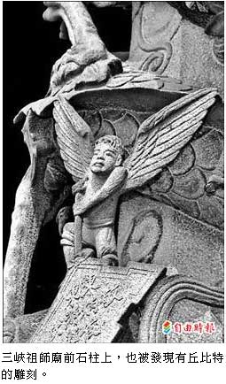

穿梭三峽祖師廟 學童尋寶
蔡百靈｜自由時報／大台北都會生活∣2012年4月4日
有「東方藝術殿堂」之稱的新北市三峽祖師廟，以古色古香、雕樑畫棟名聞遐邇，但你可能不知道，愛神丘比特、聖經中的天使、童話故事裡的美人魚…也藏身在鬼斧神工的雕刻之中，昨天八里區米倉國小師生穿梭廟間「尋寶」，留下難忘的「奇廟之旅」。
三峽祖師廟自清朝籌建，十九世紀歷經兩次重建，二次世界大戰後，祖師廟歸三峽鎮所有，由當時的代理三峽街長李梅樹接管，於民國卅六年進行第三次重建。
米倉國小校長吳望如說，觀察祖師廟細部設計，不難發現第三次重建是採「對場作」的方式施工，亦即在廟宇中軸線，用布幔將龍邊、虎邊隔開，兩派工匠依照主持人李梅樹的指揮，各自發揮創意、技巧與巧思來雕刻，因此建築左右兩邊相對應的元件，尺寸相似，但形狀、樣式、手法各異。
吳望如說，大部分的人都不知道，傳統的祖師廟裡，除了神明及龍、鳳、蝙蝠等象徵吉祥的雕刻，還能發現許多動物，舉凡地上走的貓、狗、豬、羊、鹿、熊，到天上飛的鴿子、貓頭鷹，甚至水裡的蝦子、螃蟹、章魚、魷魚、鱷魚、龍蝦等應有盡有，細細觀察，趣味無窮。
「將西方元素不留痕跡地融入東方廟宇中，是李梅樹最高竿的地方！」吳望如說，他還在廟柱上發現長著翅膀的天使及愛神丘比特的身影，不過丘比特手上拿的不是弓箭，而是傳統樂器「磬」；最讓人驚奇的，莫過於藏身於一根不顯眼柱子上的美人魚雕像，許多小朋友找半天才發現，直呼：「美人魚出現在廟裡，真不可思議！」吳望如說，李梅樹花費畢生心力，讓祖師廟的雕刻不僅中西合璧，且既精細又生活化，拉近了廟與人的距離，相當值得一探究竟。
吳望如逛祖師廟 千遍也不厭倦
「逛三峽祖師廟，千遍也不厭倦！」米倉國小校長吳望如早期曾在三峽教書，對於祖師廟一景一物瞭若指掌，十年前著作《大家來逛祖師廟》，創下連刷三版的銷售成績，他希望日後再寫一本關於祖師廟「雕刻說故事」的書籍。
吳望如說，他自新竹師專美術系畢業後，分派到三峽大埔國小任課，當時祖師廟正大刀闊斧重建，整整八年期間，他總愛趁著課餘閒暇，到廟裡和雕刻工匠聊天，對祖師廟產生深厚情感。
吳望如說，一般人到祖師廟，只知道拜拜和吃吃喝喝，卻不知道廟裡雕刻圖像的意義何在，非常可惜，他舉例，常見的花瓶、桌案圖像，即是取「瓶、案」諧音，象徵「平安」；又如猴子坐在馬上、蜜蜂飛舞的圖像，則是取「馬、蜂、猴」的諧音，代表「馬上封侯」，諸如此類吉祥圖像，在廟中處處可見。
十年前，吳望如應出版社之邀寫書，將三峽祖師廟之美呈現在讀者面前，他以冬冬、妮妮回三峽阿公家的故事情節，帶領讀者認識祖師廟，內容簡單淺顯，佐以豐富插畫和圖片，引起熱烈回響。
吳望如說，每次來祖師廟都會有新的發現，像是一座挖不完的文化藝術寶藏，正計畫再寫一本書，介紹祖師廟雕刻之美。